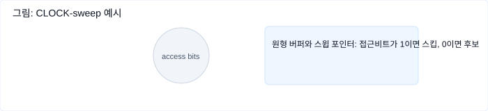

이 장에서는 저수준 저장 구조에서 한 단계 올라가 트랜잭션을 가능하게 하는 핵심 구성 요소들을 설명합니다. 버퍼 관리, 락, 로그, 복구 같은 실무 중심 개념을 예시와 함께 블로그 형식으로 풀어갑니다.
ACID
트랜잭션은 여러 작업을 하나로 묶은 불가분의 논리적 단위입니다. 트랜잭션은 다음 네 가지를 보장해야 합니다: 원자성(Atomicity), 일관성(Consistency), 격리성(Isolation), 지속성(Durability) — 흔히 ACID라고 부릅니다.
원자성 (Atomicity)
트랜잭션의 모든 단계가 성공하거나 전부 실패해야 합니다. 커밋하면 변경이 영구화되고, 중단되면 모든 변경을 되돌립니다. 커밋은 최종적이며, 실패한 트랜잭션은 재시도할 수 있습니다.
일관성 (Consistency)
일관성은 애플리케이션 단위의 약속입니다. 트랜잭션은 데이터베이스의 제약(예: 외래키, 비즈니스 규칙)을 만족하는 상태에서 다른 만족하는 상태로 전환해야 합니다.
격리성 (Isolation)
동시에 실행되는 트랜잭션들이 서로 간섭 없이 직렬 실행한 것처럼 보여야 합니다. 실무에서는 성능을 위해 격리 수준을 낮춘 구현을 사용하는 경우가 많습니다.
지속성 (Durability)
트랜잭션이 커밋되면 그 결과는 시스템 장애나 전원 장애 후에도 보존되어야 합니다. 이를 위해 충분한 정보를 디스크에 기록해야 합니다.
핵심 구성 요소
트랜잭션을 구현하려면 몇 가지 구성 요소가 함께 작동해야 합니다: 트랜잭션 매니저(스케줄링/추적), 락 매니저(동시성 보호), 페이지 캐시(버퍼 풀), 로그 매니저(WAL 기록) 등이 대표적입니다.
락 매니저는 공유/배타 락을 통해 데이터 무결성을 지키고, 페이지 캐시는 디스크와 메모리 사이에서 페이지를 버퍼링하며, 로그 매니저는 디스크에 순차적으로 변경 이력을 남겨 복구를 가능하게 합니다.
버퍼 관리와 페이지 캐시
일반적으로 데이터베이스는 느린 영구 저장소(디스크)와 빠른 주기억장치(RAM)를 조합해 사용합니다. 페이지 캐시(버퍼 풀)는 디스크 페이지를 메모리에 저장해 I/O를 줄입니다.
페이지는 캐시에서 읽혀 사용되고, 필요하면 고정(pin)해 즉시 제거되지 않게 할 수 있습니다. 수정된 페이지는 dirty 플래그가 설정되며, 디스크에 플러시될 때까지 그 상태가 유지됩니다. 캐시만 변경된 데이터는 WAL이 없으면 충돌 시 유실될 수 있습니다.

커널 페이지 캐시 우회
많은 데이터베이스는 O_DIRECT 같은 옵션을 사용해 커널 페이지 캐시를 우회하고 자체 버퍼 관리를 사용합니다. 이렇게 하면 운영체제의 리드어헤드나 비동기 I/O 같은 혜택을 포기하는 대신 애플리케이션 수준에서 더 세밀한 제어를 얻습니다.
캐싱 의미와 동작
페이지 캐시는 논리적 쓰기와 물리적 쓰기를 분리합니다. 요청 시 캐시에 있으면 메모리 복사본을 반환하고, 없으면 디스크에서 읽어옵니다. 수정된 페이지는 플러시될 때까지 dirty이며, 핀(pin)하면 다른 페이지로 대체되지 않습니다.
캐시 축출(교체) 정책
캐시가 가득 차면 오래된 페이지를 내보내야 합니다. 디스크와 동기화된(깨끗한) 페이지는 바로 제거할 수 있지만, dirty 페이지는 먼저 디스크로 플러시해야 합니다. 체크포인트는 WAL과 페이지 플러시를 조율해 복구 가능성을 유지합니다.
교체 전략은 성능에 큰 영향을 줍니다. 단순히 캐시 크기를 늘리는 것만으로 항상 성능이 좋아지지 않는 경우(벨라디의 이상 현상)가 있으므로 신중히 선택해야 합니다.
FIFO와 LRU
FIFO는 먼저 들어온 페이지를 먼저 내보내고, LRU는 가장 오랫동안 접근되지 않은 페이지를 교체합니다. LRU는 정확도를 위해 자주 참조 정보를 업데이트해야 해 동시성 환경에서 오버헤드가 큽니다.
CLOCK
CLOCK 알고리즘은 접근 비트와 원형 포인터를 사용하는 LRU의 근사입니다. 비교적 간단하고 동시성에 친화적이라 실제 시스템(예: 리눅스 변형)에서 자주 쓰입니다.

LFU / TinyLFU
참조 빈도를 기반으로 교체 결정을 내리는 LFU는 자주 사용되는 페이지를 오래 보존합니다. TinyLFU는 빈도 필터와 입장/보호/후보 큐를 조합해 실제 히트패턴을 효율적으로 반영합니다(예: Caffeine 라이브러리).
복구와 쓰기 앞 로그 (WAL)
시스템은 여러 계층에서 실패할 수 있습니다. 쓰기 앞 로그(WAL)는 순차로 쌓이는 로그로, 캐시에만 있던 변경을 재생해 크래시 이후 상태를 복원할 수 있게 해 줍니다. 일반적으로 상태를 바꾸는 작업은 해당 변경을 로그에 먼저 기록한 뒤 페이지를 디스크에 반영합니다.
PostgreSQL와 fsync()
PostgreSQL은 체크포인터와 fsync()로 더티 페이지를 디스크에 동기화합니다. 다만 일부 OS에서 fsync 동작이 I/O 오류를 올바르게 보고하지 못하거나 dirty 플래그를 지우는 경우가 있어, 복구 로직을 설계·검증할 때 각종 실패 시나리오를 꼼꼼히 테스트해야 합니다.
로그의 의미와 동작
WAL 레코드는 증가하는 LSN(Log Sequence Number)을 가집니다. 로그 버퍼는 LSN 순서대로 강제로 디스크에 기록되며, 트랜잭션의 커밋 레코드가 디스크에 내려갈 때까지 커밋은 완료되지 않습니다. 롤백 중에는 보상 로그(CLR)를 남겨서 복구가 다시 중단되더라도 중복되지 않게 만들 수 있습니다.
체크포인트
체크포인트는 특정 LSN까지의 로그가 안전하게 디스크에 반영되었음을 표시합니다. 전체를 동기식으로 플러시하면 서비스 중단이 크므로 대부분의 시스템은 퍼지 체크포인트(fuzzy checkpoint)를 사용해 비동기적으로 페이지만 플러시합니다.
# WAL 예시 (pseudo)
begin_transaction(T1)
log(LSN1, "UPDATE accounts SET balance = balance - 100 WHERE id = 1")
log(LSN2, "UPDATE accounts SET balance = balance + 100 WHERE id = 2")
force_log(LSN2) # commit record forced
commit(T1)
연산 로그 vs 데이터 로그
로그는 물리적(페이지 이미지)일 수도 있고 논리적(연산)일 수도 있습니다. 물리적 로그는 페이지의 바이트 이미지를 보관하고, 논리적 로그는 수행해야 할 연산을 기록합니다. 실무에서는 논리적 언두와 물리적 리두를 결합해 동시성과 복구 속도를 균형 있게 맞춥니다.
Steal / Force 정책
스테일(steal)/노스테일, 포스(force)/노포스 정책은 메모리 변경을 언제 디스크로 내보낼지 결정합니다. 스테일은 커밋되지 않은 변경도 플러시할 수 있어 언두 로그가 필요하고, 포스는 트랜잭션 커밋 시 관련 페이지를 반드시 플러시해야 하므로 느립니다. ARIES는 스테일+노포스(steal/no-force) 조합을 씁니다.
ARIES
ARIES는 WAL을 사용해 리두는 물리적으로, 언두는 논리적으로 처리하며 보상 로그(CLR)를 남깁니다. 복구는 세 단계로 진행됩니다: 분석(분실한 더티 페이지·진행 중인 트랜잭션 식별), 리두(충돌 시점까지 기록 재실행), 언두(미완료 트랜잭션 롤백).
동시성 제어
동시성 제어는 동시에 실행되는 트랜잭션 사이의 상호작용을 관리합니다. 대표적인 방식으로 낙관적 동시성 제어(OCC), 다중버전 동시성 제어(MVCC), 비관적(락 기반) 제어, 타임스탬프 순서 등이 있습니다.
직렬화 가능성 (Serializability)
스케줄이 직렬 실행과 결과가 같은 경우 직렬화 가능하다고 합니다. 직렬화 가능성은 동시 실행의 결과가 어떤 직렬 순서로 실행한 것과 같도록 보장합니다.
격리 수준과 이상 현상
SQL은 더티 리드, 반복 불가능 리드, 팬텀 리드 같은 이상 현상을 정의합니다. 격리 수준(읽기 미확정, 읽기 확정, 반복 가능 읽기, 직렬화)은 성능과 보장 사이의 트레이드오프입니다. 스냅샷 격리는 트랜잭션 시작 시점의 스냅샷을 제공하지만 쓰기 스큐(write skew)가 발생할 수 있습니다.
낙관적 동시성 제어 (OCC)
OCC는 읽기, 검증, 쓰기 3단계로 나뉘어 동작합니다. 트랜잭션은 잠금을 사용하지 않고 개인 컨텍스트에서 실행한 뒤, 커밋 전 검증 단계에서 충돌이 없으면 쓰기를 적용합니다. 충돌 시 재시도합니다.
다중버전 동시성 제어 (MVCC)
MVCC는 레코드의 여러 버전을 유지해 읽기가 오래된 버전을 참고하도록 함으로써 읽기 쪽의 동기화를 줄입니다. 스냅샷 격리 구현에 자주 사용됩니다.
비관적(락 기반) 제어
비관적 방식은 실행 중에 충돌을 막기 위해 락을 사용합니다. 대표적인 방법인 2단계 락(2PL)은 필요한 락을 먼저 확보한 뒤 작업을 끝내고 락을 해제합니다. 락은 경쟁과 교착 상태의 위험을 동반합니다.